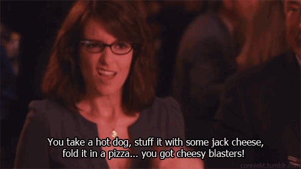

About the Meal
The Cheesy Blaster is from the show 30-Rock. This meal is one that is enjoyed by Liz Lemon.
Recipe Reference
Recipe
Ingredients
- Pizza Dough
- Flour
- Spicy Italian Sausage
- Pepporoni
- Genoa Salami
- Hard Salami
- Low Moisture Mozzerella
- Pizza Sauce
- Ricotta Cheese
- Egg
Steps
- Make pizza dough. Click here for a recipe.
- Cut the pizza dough into 4 equally sized pieces. Then roll out one piece on a floured surface until it is a circle.
- Cook some spicy italian sausage in a pan and make sure to crumble it up.
- While the sausage cooks, dice up some pepporoni, genoa salami, and hard salami. Any 3 salamis will work.
- Add some pizza sauce to the the dough and top it with some of the low moisture mozzerella. Then cut three slits for steam in the top. Cover it with an egg
wash and place in an oven that is at 500 degrees for 20 minutes.
- Let the cheesy blasters sit for 10-15 minutes to cool.